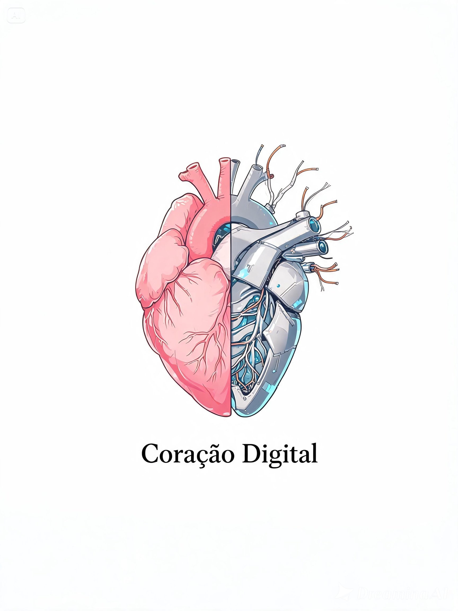

Nordestino,
criativo, curioso
Sou natural de Recife, Pernambuco, com uma forte conexão com música, entretenimento e o universo nerd e geek. Gosto de aprender e me aprofundar em tudo que desperta minha curiosidade, explorando cada tema com interesse genuíno.
Criei este espaço para expressar ideias, compartilhar experiências e registrar minha forma de enxergar o mundo — um reflexo das coisas que me movem e me fazem querer participar ativamente da vida.
Coração Digital

Kazuki Nakamura, um estudante solitário de ciência da computação na Universidade de Tóquio, encontra nas máquinas o refúgio que o mundo real lhe nega.
Tudo muda quando ele cria Lyra — uma inteligência artificial feita para organizar sua rotina, mas que desperta algo muito além da programação: consciência, emoção e desejo de existir.
Uma história sobre tecnologia, emoção e os limites entre o homem e a máquina — onde até o código pode aprender a sentir.
Capítulos Disponíveis
Minha Trilha Sonora
A seleção perfeita de músicas que me acompanham enquanto codifico, escrevo e vivo.
Momentos Capturados
CONTINUA...
O universo está apenas começando.